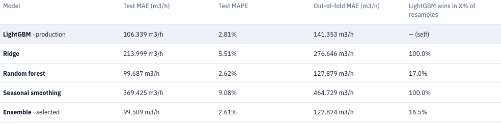
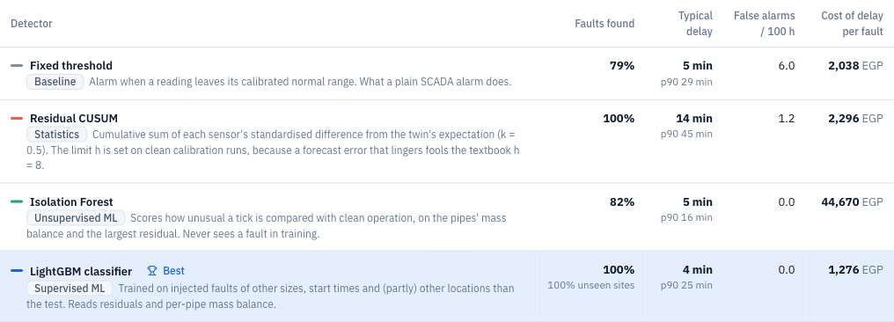

Each task was tried with several models, and the system marks the best
Language model: gpt-oss-120b
2.6%
water error of the best model, the Ensemble (Ridge: 5.5%)
LightGBM stays live, 6% behind on water.

160 of 160
lab test faults found by the best detector, with 0 false alarms: at least 97% with 95% confidence
On a larger, mixed test the live rules found 93% of 212 faults.
Screens from the running system. All data is simulated, and each model is scored on days or faults it never saw.